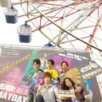

桌面歌詞，為 Mac 全新構想。
Lyric 與 Muse，合而為一。把歌詞交給繆思，你只管聽歌。
開源 · macOS 14 以上 · Apple Silicon 與 Intel
這些播放器都能用
 Apple Music
Apple Music
 Spotify
Spotify
 KKBOX
KKBOX
 Amazon Music
Amazon Music
 QQ 音樂
QQ 音樂
 網易雲音樂
網易雲音樂
 酷狗音樂
酷狗音樂
 汽水音樂
汽水音樂
 YouTube Music
YouTube Music
影片
30 秒看完 Lyrimuse，先看再裝。
動態島、選單列、外語歌的逐詞讀音，還有附即時預覽的設定頁，半分鐘看完。
顯示方式
四種顯示方式，想開幾個開幾個。
完整的歌詞視窗、瀏海下的動態島、選單列，還有浮在所有視窗上面的桌面歌詞。
翻譯與讀音
外語歌，也能跟著唱。
譯文跟在原文下面，讀音逐詞標在對應的字下面。
連那一天的悲傷
米津玄師《Lemon》
歌詞配對
十二個歌詞來源，挑最對的那份。
所有結果統一評分，分數最高的勝出；找錯了就手動搜尋、手動修改，選中的那份會被鎖定。
-
QQ音樂勝者逐字1,254
逐字時間軸 +400 · 時長吻合 +268 · 內容獲印證 +250 · 專輯吻合 +150 · 標題吻合 +120 · 行數 +66
-
酷狗音樂逐字1,243-11
時長吻合 -15 · 行數 +4
-
網易雲音樂逐字1,200-54
時長吻合 -62 · 行數 +8
-
Musixmatch逐字1,111-143
時長吻合 -108 · 專輯吻合 -75 · 內附譯文 +50 · 行數 -10
-
LRCLIB876-378
逐字時間軸 -400 · 時長吻合 +12 · 行數 +10
5 個候選在這些項目上完全相同：標題吻合 +120 · 內容獲印證 +250
5/12 個來源有回應
-
晴天周杰倫葉惠美分數 1254 · 63 行QQ音樂逐字時間軸目前使用
-
晴天周杰倫葉惠美分數 1243 · 63 行酷狗音樂逐字時間軸
-
晴天周杰倫葉惠美分數 1200 · 64 行網易雲音樂逐字時間軸
-
晴天周杰倫葉惠美分數 1111 · 62 行Musixmatch逐字時間軸譯文
- 以父之名 周杰倫葉惠美QQ音樂0.0
- 懦夫 周杰倫葉惠美QQ音樂0.0
- 晴天 周杰倫葉惠美QQ音樂+0.2
- 三年二班 周杰倫葉惠美網易雲音樂0.0
- 東風破 周杰倫葉惠美QQ音樂0.0
- 你聽得到 周杰倫葉惠美酷狗音樂0.0
- 同一種調調 周杰倫葉惠美QQ音樂0.0
- 她的睫毛 周杰倫葉惠美QQ音樂0.0
- 愛情懸崖 周杰倫葉惠美網易雲音樂0.0
- 梯田 周杰倫葉惠美QQ音樂0.0
聆聽檔案
每一次播放，都記進你的聆聽檔案。
同步到 Last.fm 和 ListenBrainz，還有統計、排行榜和聆聽足跡。
- 晴天周杰倫第 38 次正在記錄
- 倔強五月天第 30 次4 分鐘前
- 愛人錯過告五人第 21 次8 分鐘前
- 你就不要想起我田馥甄第 17 次12 分鐘前
- 富士山下陳奕迅第 12 次16 分鐘前
- 遇見孫燕姿第 9 次20 分鐘前
- 1
周杰倫
×486= - 2

五月天×352▲1 - 3
告五人
×298▼1 - 4
陳奕迅
×231▲2 - 5
田馥甄
×174▼1 - 6
孫燕姿
×126
- 1
葉惠美周杰倫
×312▲1 - 2
神的孩子都在跳舞五月天
×268▼1 - 3
運氣來得若有似無告五人
×205▲3 - 4
What's Going On...?陳奕迅
×184= - 5
渺小田馥甄
×151▼2 - 6
The Moment孫燕姿
×97
- 晴天周杰倫×9
- 倔強五月天×6
- 愛人錯過告五人×5
隨你調
每一處都能調，改的時候就看得到效果。
字體、顏色、寬度、位置都能改，每一頁設定都有即時預覽。拖一下滑桿試試。
還有這些。
- 對唱分開顯示
- 和聲單獨顯示
- 動態封面
- 專輯介紹與歌手簡介
- 歌詞簡繁切換
- 歌詞時間軸微調
- 待播歌曲提前解析
- 離線可用
- 缺失歌詞自動補搜
- 新增汽水音樂、KKBOX 和 Amazon Music 三個內建播放器，一共支援八個
- 按播放佇列提前準備好接下來幾首的歌詞和翻譯
- 播放器已經存在本機的歌詞會直接拿來用，找得更快、更準
支援哪些 Mac？
macOS 14 Sonoma 以上，Apple Silicon 和 Intel 都支援，Intel 用單獨的安裝包。想在本機翻譯歌詞，需要 macOS 15 以上。
怎麼安裝？
推薦用 Homebrew：點上面的「複製 Homebrew 安裝指令」，貼到終端機執行，第一次打開時的 Gatekeeper 提示它會順手處理，也不需要 Apple 開發者帳號。也可以從 GitHub 下載 DMG 手動安裝，步驟見 README。之後的更新都在 App 裡完成。
需要給哪些權限？
Apple Music 和 Spotify 第一次使用時，macOS 會問你要不要允許 Lyrimuse 控制它們（「自動化」權限），同意就好；QQ 音樂、網易雲音樂、酷狗、汽水音樂、KKBOX、Amazon Music 都不用額外授權。
我的資料會上傳嗎？
沒有帳號、沒有遙測、沒有統計，關於你和你聽什麼，不會有任何資訊傳到開發者那裡。找歌詞時會把正在播的這首歌拿去問各個歌詞來源，翻譯預設在本機完成。完整清單見隱私政策。
沒有網路能看歌詞嗎？
可以。找過一次的歌詞會存在本機，之後不連網也能顯示；第一次找歌詞和線上翻譯需要網路。
沒有瀏海的 Mac 能用動態島嗎？
可以。在沒有瀏海的螢幕上（舊款 MacBook 或外接顯示器），膠囊貼在螢幕頂部置中，跟選單列一樣高，放在哪個螢幕可以在設定裡選。
歌詞不對或不同步怎麼辦？
時間對不上，就幫這首歌調個偏移，之後會一直記住；版本不對，就打開手動搜尋換一份，選中的那份會被鎖定。也可以在「歌詞管理」裡直接修改。
和 LyricsX 有什麼差別？
LyricsX 最後一個版本是 2022 年 4 月的 v1.6.3。Lyrimuse 需要 macOS 14 以上，多支援了 QQ 音樂、網易雲音樂、酷狗、汽水音樂、KKBOX、Amazon Music 和 YouTube Music，歌詞按評分挑選，有粵拼和日文假名，還能記錄到 Last.fm。詳見逐項查證過的對比。